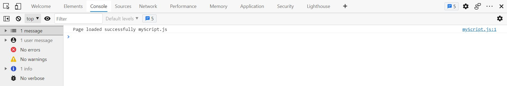
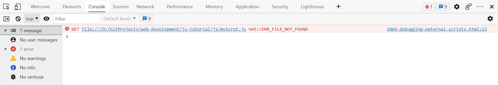

Scripts can also be placed in external files.
JavaScript files have the file extension .js.
To use an external script, put the name of the script file in the src (source) attribute of a <script> tag.
Script in myScript.js
console.log("Page loaded successfully myScript.js");
<script src="myScript.js"></script>

<script src="myScrpt.js"></script>
